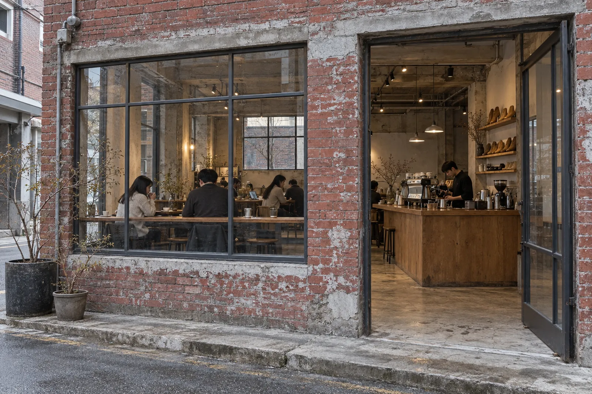

구두 골목 안쪽에서
아침 여덟 시에
문을 엽니다
성수동 연무장길, 40년 된 구두 공방 건물 1층입니다. 원두는 매주 화요일에 조금씩 볶고, 스콘은 문 열기 전에 굽습니다.
화–금 08:00–20:00 · 주말 10:00–21:00 · 월요일 휴무

영업시간
마지막 주문은 닫기 30분 전까지 받습니다. 공휴일 영업은 매장 앞 칠판에 일주일 전에 적어 둡니다.
| 월 | 정기 휴무 |
|---|---|
| 화 | 08:00 – 20:00 |
| 수 | 08:00 – 20:00 |
| 목 | 08:00 – 20:00 |
| 금 | 08:00 – 20:00 |
| 토 | 10:00 – 21:00 |
| 일 | 10:00 – 21:00 |
오시는 길
서울 성동구 연무장길 41-2, 1층
- 2호선 성수역 3번 출구로 나와 뒤로 돌아 첫 골목으로 들어갑니다.
- 연무장길을 만나면 오른쪽으로, 구두 수선집 두 곳을 지나 걷습니다.
- 붉은 벽돌 건물, 철제 문이 열려 있는 곳입니다. 역에서 걸어서 6분쯤 걸립니다.
매장 주차는 안 됩니다. 반려견은 바깥 벤치 자리에서 함께하실 수 있습니다.